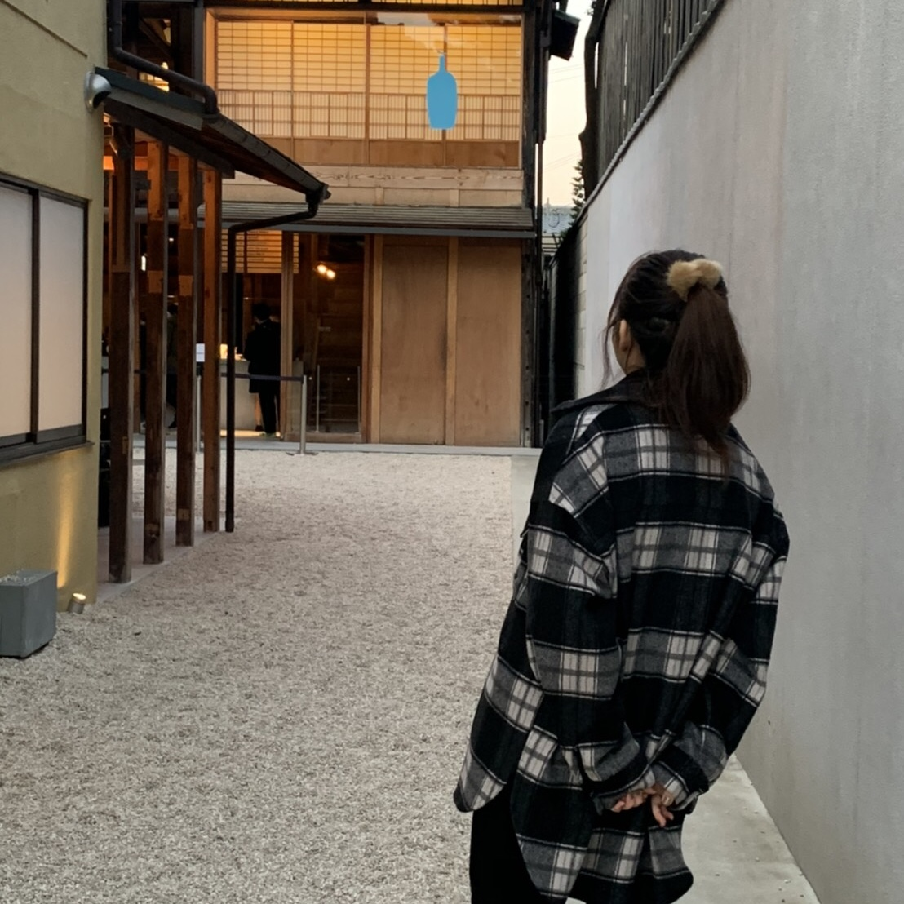

ABOUT
名古屋に住む現役女子大生です。
大学では情報科学を専攻しており、Haskell・Java・Cの言語を学習しました。
Webデザインに興味があり2020年から独学でHTML・cssの学習をスタートし、2021年3月からオンラインプログラミングスクールでWebデザインの本格的な学習をスタートさせました。
将来は自分の力で新たなモノやサービスを開発するエンジニアになりたいです。
想像力や行動力を養うために幅広い分野に関わるようにしています。

氏名 :Yua Nishio
年齢 :19
住所 :愛知県名古屋市
学歴（経歴） :愛知県立大学情報科学部在学・TECH I.S在学
技能 ：Web制作におけるHTML・CSSコーディング、JavaScript、JQuery、Bootstrap
Haskell、Java、Cでのシステム開発